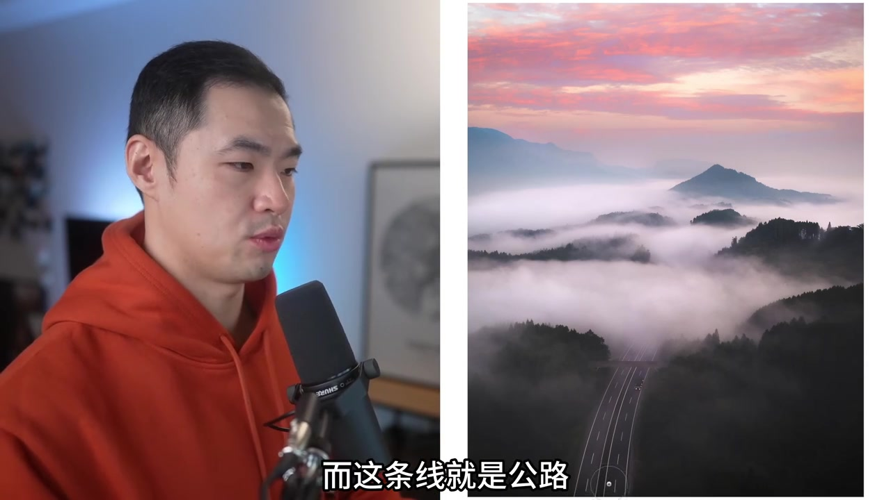
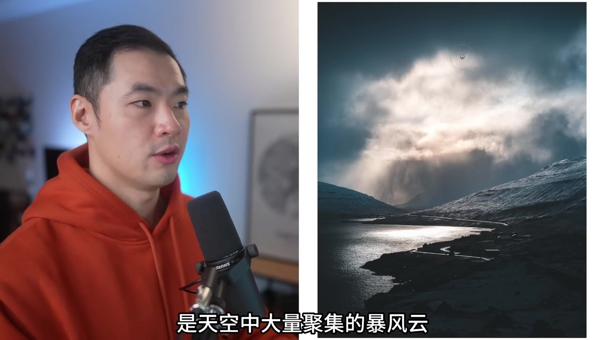
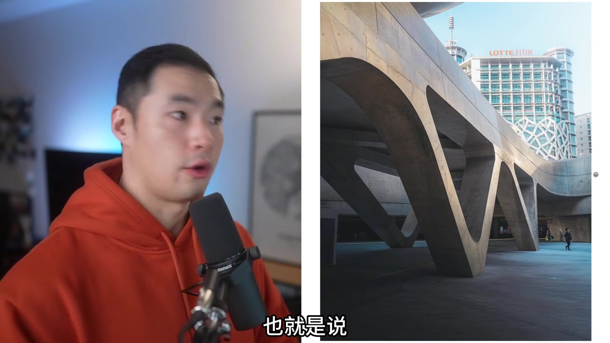
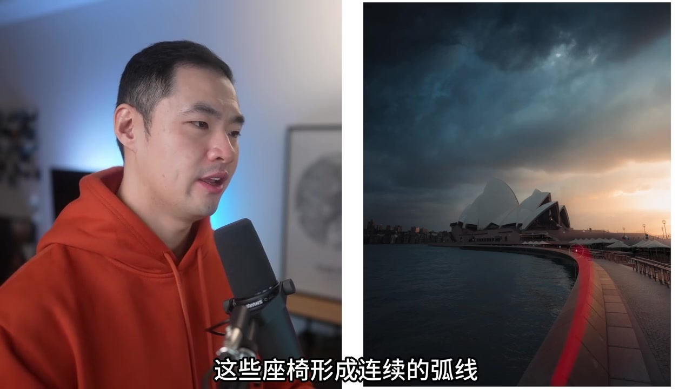
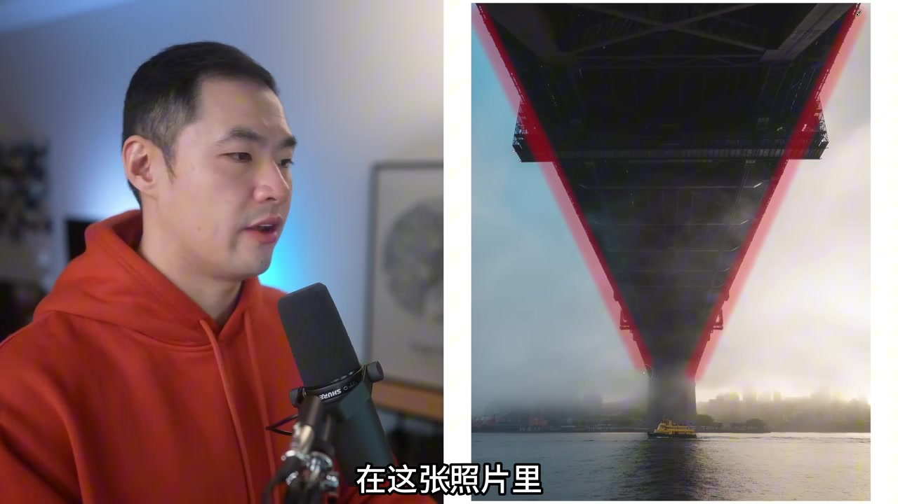
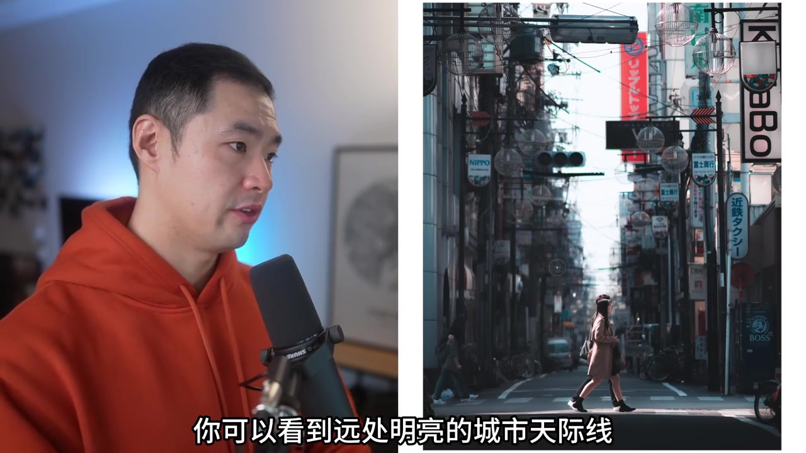
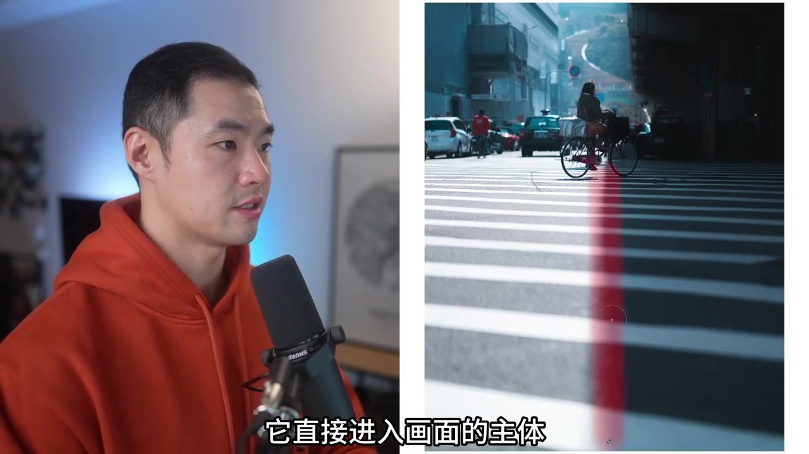

为什么这一期必须讲引导线
讲师先说明：这是「视觉模式」系列的第三集，要把摄影里的视觉语言拆成可学的模式。今天的主题只有一个词——引导线。他提醒没看过前两集的人可以先回去补，但马上转入正题。
说明：Whisper 固定按中文识别时，出现「哀号者/直导性/视觉毛点/方效/实力/安川/法罗群道/GDP/海岗/杜伦/大版/敏暗/投尸」等音近误识。下文叙事以可见字幕与画面为准，文末转录区仍完整保留全部原始分段。
他先给定义：引导线是画面中能把观众视线移到摄影师希望他们看到的位置的元素；通常落在主体或视觉层级很高的元素上，但后面会证明——它不一定总是直接指向主体。
「引导线指的是画面中的各元素，能够引导观众的视线移动到摄影师希望他们看到的位置。」
先落点，再运动：视觉锚点先于线条
进入案例前，讲师抛出本集核心：引导线真正跟视觉层级有关，更准确地说，它要配合「视觉锚点」——观众视线能停下来、能辨认内容的地方。没有停靠点，线条的第二个作用（方向）也无从谈起。
流程被他说成两步：目光先停下、理解画面在发生什么；再沿着线条自然移动，最终到主体。引导线本质上讨论的是运动、流动和变化，而不只是「画一条箭头」。
「引导线真正的核心，其实与视觉层级密切相关……它真正强调的是视觉锚点。」
从一条公路开始，再加河流与包围
他刻意从最简单的风光入手：日本日出公路延伸进云海，画面几乎只有这一条主线。目的是先建立基础概念——道路一旦被注意到，就会变成你视觉系统的一部分。

接着是法罗群岛：暴风云压境，一束光打亮湿润路面。道路从前景延伸，把目光送向远处被照亮的云层——那片云才是真正主体。再往后，双道路汇向小镇，外加环绕小镇的河流，说明一张照片可以同时拥有多条线。

他还纠正一个常见误解：引导线不一定必须直指主体。有些线条是在包围、强调主体；真正重要的是视线以连续方式移动并读懂画面。
透视线、座椅弧线与桥下结构
城市段落从韩国东大门设计广场（DDP，转录作「GDP」）开始：略微侧倾相机，让建筑斜线汇聚到右下角主体。他说这很简单——倾斜一点点，边缘线条就会变形并指向重点。

悉尼歌剧院案例更经典：前景座椅形成连续弧线，把目光自然送到歌剧院。红色辅助线画在座椅上，字幕强调「这些座椅形成连续的弧线」。他强调：简单不等于无效。

桥下视角则更直接：站在悉尼海港大桥下方，结构线条天然形成透视，把目光带到水面上的渡轮（转录作「杜伦」）。樱花季大阪城则用一根树枝当自然入口线，同时叠加景深、颜色与明暗对比。

长路汇聚、电线强化与短距方向感
消失点段落解释得很清楚：足够长且笔直的道路会让线条向远处汇聚成一点，常形成三角形构图。案例里，道路与两侧线条把目光送到中间两个人物；大阪后街同样只要视觉距离够长就能复现。

富士吉田的长路上，富士山在背景，但真正强化透视的是上方电线，而不是山本身。讲师借此再强调：引导线可以只是辅助层次，不必「钉」在主体上。短距铁轨、平行结构同样有效——只要有方向感。
东京追焦骑行人则展示「包围」：线条不直指主体，却圈出应找重点的区域。
阴影当线，河流当主体，冰川当组线
阴影篇强调普适性：有光就有影，站位和构图能控制它。斑马线与斜影直指骑车人；高架下斜影指向走出阴影的人物；沙漠里沙丘投影则更柔和，只暗示该看哪里。

自然收尾更快：高空无人机下的河流既是主体又是浏览路径；新西兰库克山冰川是多条同向元素共同汇向主峰——证明引导线可以是一组方向一致的视觉元素，而不必是单根明显线。法罗暴风雪中的河流从底到右上贯穿画面，制造方向、运动与节奏。
线条无处不在，但仍需练习
结尾把材料来源收成一张清单：道路、围栏、平行线、透视、阴影，以及任何有方向感的元素，都可能成为引导线。它入门容易，但需要不断拍摄与观察，才会变成习惯。
「线条无处不在……它们都有可能成为引导线。」
这一期按时间留下的印象
先定义与视觉锚点，再从公路、风暴路、建筑、歌剧院座椅、桥下渡轮、消失点街道、电线强化、阴影骑行，走到河流与冰川组线。整集几乎都在用照片证明：引导线管的是视线如何连续移动，而不是只画一条箭头到主体。